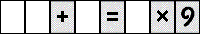
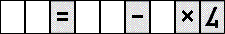

Fill in the blank spaces in each puzzle with the digits shown below so that the equation is true, and remains true even when viewed upside down. (Note that the 2 and 3 look like one another upside down, as do the 4 and 7, and 6 and 9.) No puzzle contains any digit more than once. Standard order of operations are used: multiplication and division before addition and subtraction, and otherwise left to right.
1-2. Math Flip
1. 
2. 
Click here to go back to the Puzzle Palace.